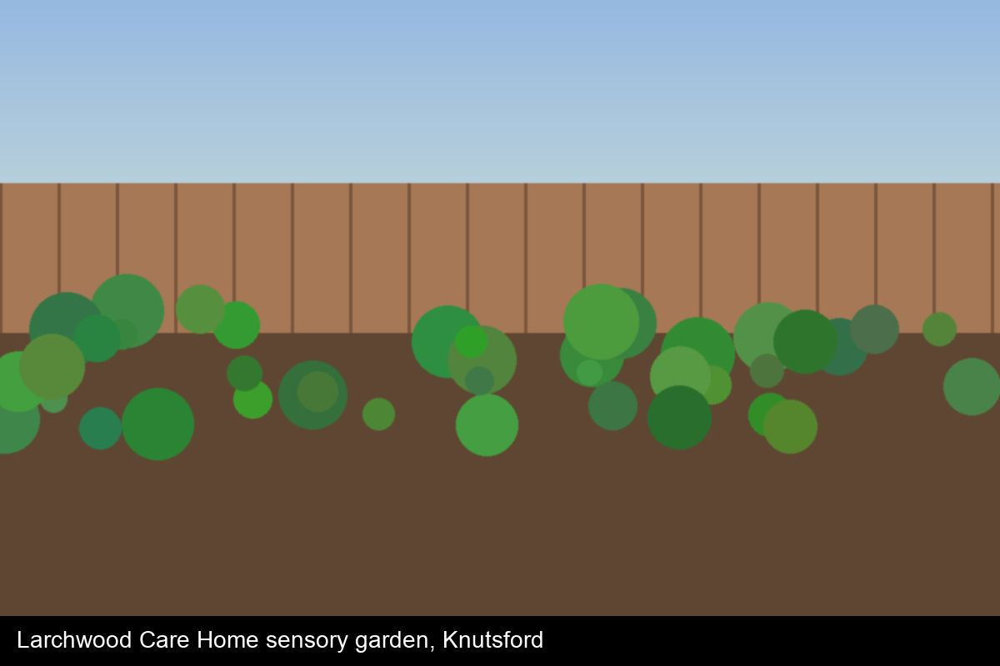
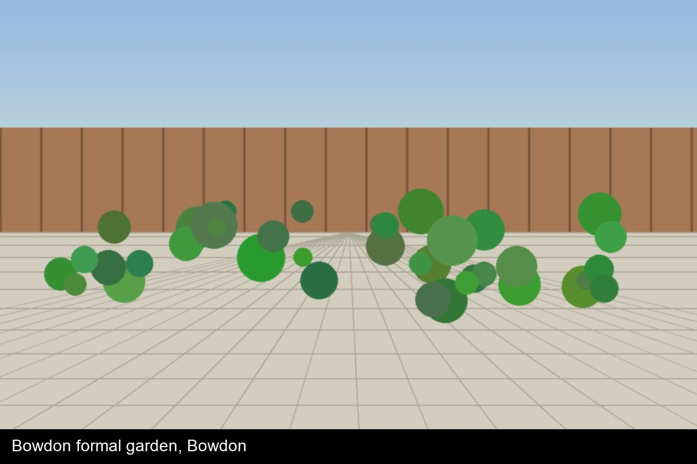
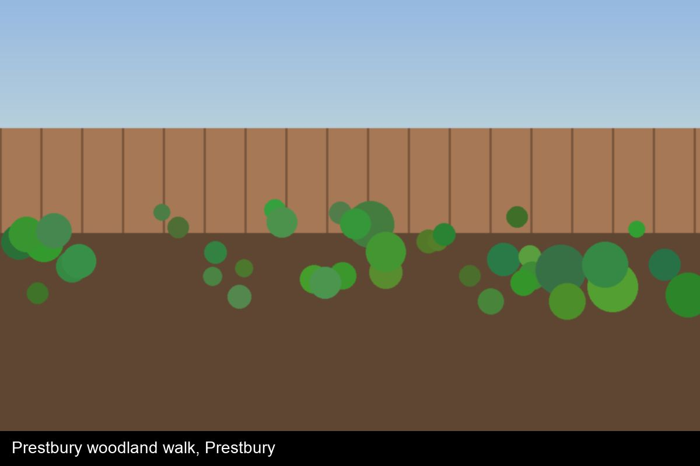
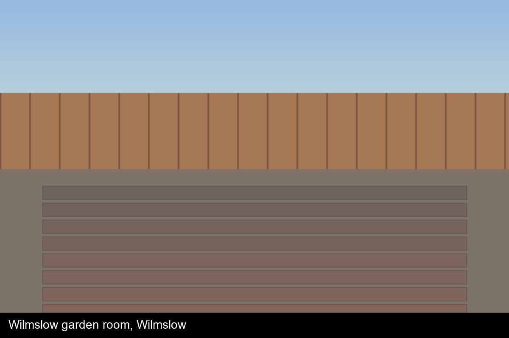
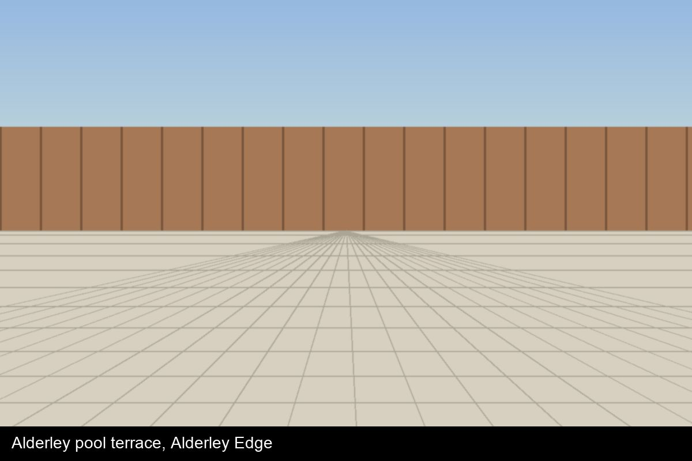

Projects
A selection of recent gardens - residential, commercial and community. Every project is designed and built by our own team.

Sale patio & lawn
Sale · 2026
A tired lawn and cracked concrete patio replaced with a grey 600x600 porcelain terrace, a new lawn and crisp aluminium edging. Built in five days.
Materials: Urban Grey porcelain, Premium turf, Aluminium edging

Didsbury family garden
Didsbury · 2026
A family garden with a Raj Green sandstone patio, new closeboard fencing and side gate, a lawn for football and colourful, robust borders.
Materials: Raj Green sandstone, Closeboard fencing, Perennial borders

The Kingsley Arms beer garden
Lymm · 2026
A complete beer-garden rebuild: Kandla Grey sandstone terrace, raised composite deck with festoon lighting, slatted cedar screens and planters. Delivered in a month so the pub reopened for Easter.
Materials: Kandla Grey sandstone, Composite decking, Slatted cedar screens, Festoon and step lighting

Larchwood Care Home sensory garden
Knutsford · 2026 (in progress)
A wheelchair-accessible loop path with gentle falls, raised corten planters at seated height, scented planting and a water feature residents can hear from the lounge.
Materials: Porcelain paving, Corten planters, Corten water blade, Low-level lighting

Bowdon formal garden
Bowdon · 2025
Clipped yew, reclaimed Yorkstone paths and a central water bowl for a Victorian villa.
Materials: Reclaimed Yorkstone, Yew hedging, Water feature

Prestbury woodland walk
Prestbury · 2024
A bark-chip path through existing woodland, underplanted with ferns, foxgloves and spring bulbs.
Materials: Bark paths, Oak sleeper steps, Woodland planting

Wilmslow garden room
Wilmslow · 2025
A 4x3m insulated garden office on a concrete base, wrapped with composite decking and screened by multi-stem trees.
Materials: Garden room, Composite decking, Multi-stem amelanchier

Alderley pool terrace
Alderley Edge · 2024
Large-format Ivory porcelain around an existing pool, with frameless steps, under-coping LED strip and Mediterranean planting.
Materials: Ivory porcelain 900x600, LED strip lighting, Mediterranean planting
Currently on site
- A two-level porcelain terrace with a green-oak pergola and outdoor kitchen in Bowdon
- A blue limestone courtyard with a corten water blade in Alderley Edge
- Plot landscaping for a new housing development in Lymm